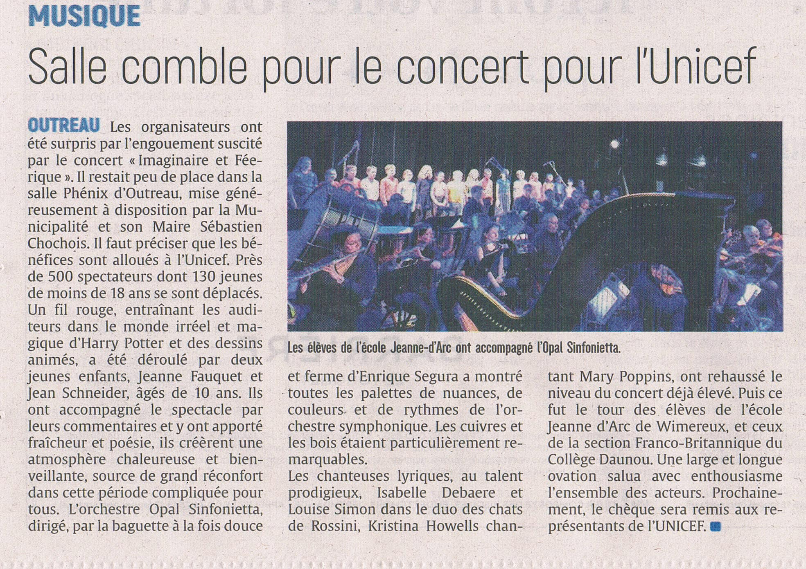
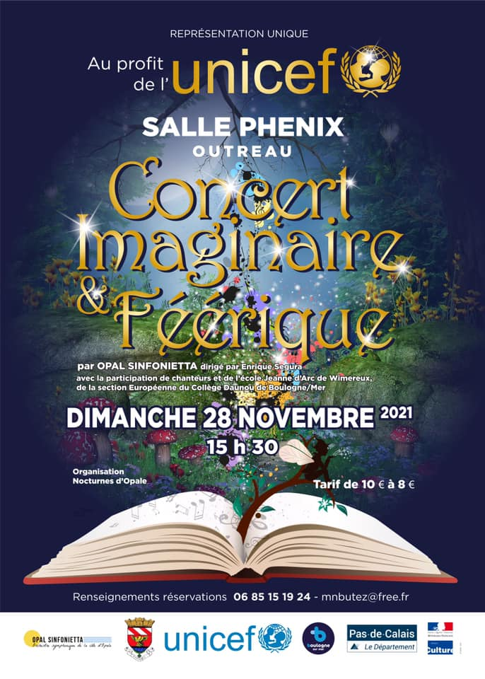
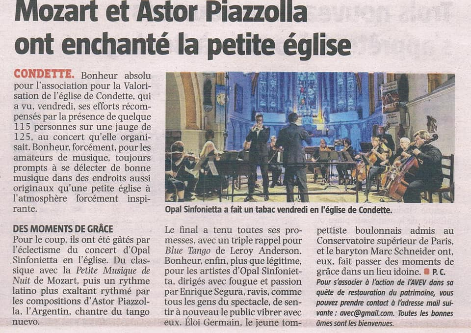
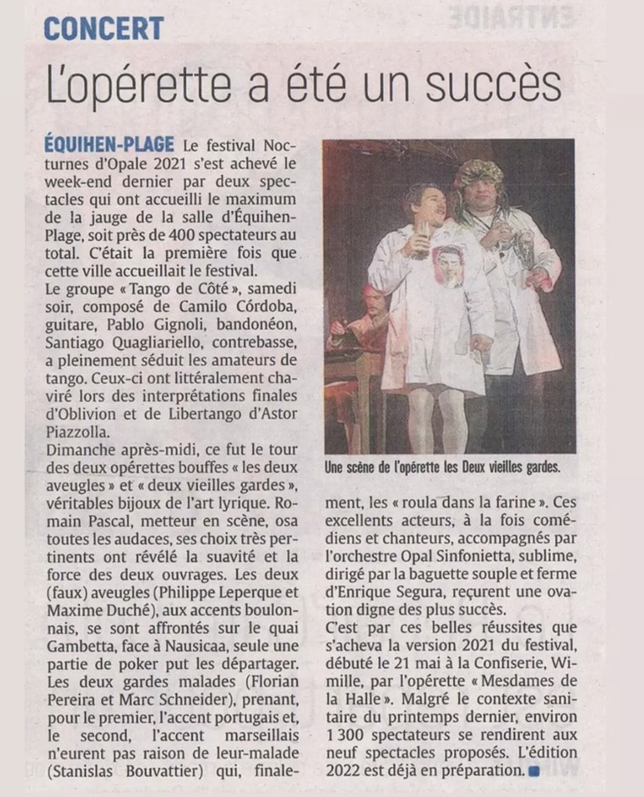

Prensa

Sala llena para el concierto para UNICEF
"... La orquesta Opal Sinfonietta, dirigida por la batuta a la vez dulce y firme de Enrique Segura, mostró todas las paletas de matices, colores y rítmos de la orquesta sinfónica..."

Concierto imaginario y mágico
"... A beneficio de la UNICEF. Por Opal Sinfonietta, dirigida por Enrique Segura..."

Momentos de gracia
"... Felicidad, por fin, más que legítima, para los artistas, dirigidos con ardor y pasión por Enrique Segura, encantados, como toda la gente del espectáculo, de sentir de nuevo al público vibrar con ellos..."

La opereta fue un éxito
"... Estos excelentes actores, tanto humoristas como cantores, acompañados de la orquesta Opal Sinfonietta, sublime, dirigida por la suave y firme batuta de Enrique Segura, recibieron una ovación digna de los más exitosos..."